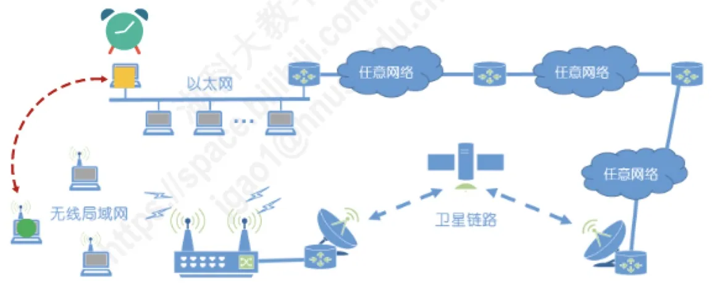
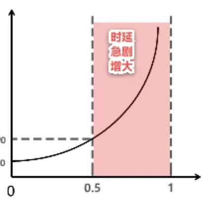
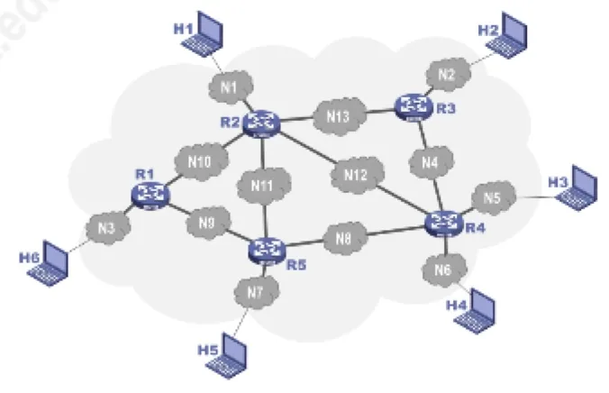

计算机通信与网络 · 第 1 章 概述
1.5 计算机网络的性能指标（2）
上一节讲了速率、带宽、吞吐量和时延。本节接着讲另外四个常用的性能指标：时延带宽积、往返时间、利用率和丢包率。前两个刻画「链路里同时能装多少数据」和「一来一回要多久」，后两个则刻画网络有多忙、有多不可靠 —— 它们共同决定了用户实际感受到的网络质量。
1. 时延带宽积
时延带宽积是传播时延与带宽的乘积：
时延带宽积 = 传播时延 × 带宽
这个乘积的单位值得算一算：传播时延的单位是秒，带宽的单位是「比特/秒」，两者相乘恰好得到比特。所以时延带宽积的物理意义是「链路上能容纳多少个比特」——
- 若发送端连续发送数据，则在所发送的第一个比特即将到达终点时，发送端就已经发送了时延带宽积个比特；
- 因此链路的时延带宽积又称为以比特为单位的链路长度。
打个比方：把链路想象成一根管道，带宽是管道的粗细，传播时延是管道的长短，时延带宽积就是这根管道里此刻装了多少水。它是理解 TCP 发送窗口、带宽时延积等后续概念的基础。
2. 往返时间 RTT
在许多情况下，因特网上的信息并不是单方向传输，而是双向交互的：发一个请求、等一个应答，再发下一个。这时我们很需要知道「一来一回」要花多长时间。因此往返时间 RTT（Round-Trip Time）也是一个重要的性能指标，它指从发送方发送数据开始，到发送方收到来自接收方的确认（接收方收到数据后便立即发送确认）总共经历的时间。
RTT 与链路类型关系很大。同样一次交互，在以太网、无线局域网和卫星链路上的耗时完全不同 —— 卫星链路的 RTT 明显更大。原讲义给出过一个直观的估算：卫星距离地面约 36000 km，电磁波在自由空间中的传播速率约 3 × 105 km/s，于是单程传播时间约为 36000 ÷ 300000 = 0.12 s，往返一次就是 0.24 s。也就是说，仅「信号在路上跑」这一项，卫星链路的一个来回就要 240 ms。这也提醒我们：RTT 里既包含各结点的处理与排队时延，也包含往返两段的传播时延。

后续章节会反复用到 RTT：5.8.1 节 TCP 建立连接要一个 RTT，6.7 节 HTTP 的非持续连接每请求一个对象要两个 RTT。
3. 利用率
利用率分为两种：
- 信道利用率：用来表示某信道有百分之几的时间是被利用的（即有数据通过）；
- 网络利用率：全网络的信道利用率的加权平均值。
直觉上似乎利用率越高越好，但事实恰恰相反。根据排队论，当某信道的利用率增大时，该信道引起的时延也会迅速增加，因此信道利用率并非越高越好。如果令 D0 表示网络空闲时的时延，D 表示网络当前的时延，那么在适当的假定条件下，可以用一个很简单的公式表示 D、D0 与利用率 U 之间的关系：
D = D0 / (1 − U)
由此可以直接读出几条结论：
- 当网络的利用率达到 50% 时，时延就要加倍（D = 2D0）；
- 当网络的利用率超过 50% 时，时延急剧增大；
- 当网络的利用率接近 100% 时，时延趋于无穷大。
正因为如此，一些拥有较大主干网的 ISP 通常会控制它们的信道利用率不超过 50%；如果超过了，就要准备扩容，增大线路的带宽。
但反过来，也不能使信道利用率太低，那会让宝贵的通信资源白白浪费。正确的做法是使用一些机制，根据情况动态调整输入到网络中的通信量，使网络利用率保持在一个合理的范围内 —— 这正是第 5 章 TCP 拥塞控制要解决的问题。

4. 丢包率
丢包率即分组丢失率，是指在一定的时间范围内，传输过程中丢失的分组数量与总分组数量的比率。具体可分为接口丢包率、结点丢包率、链路丢包率、路径丢包率、网络丢包率等。
丢包率是网络运维人员非常关心的一个性能指标，但普通用户往往并不关心，因为他们通常意识不到网络丢包 —— 丢包造成的重传与延迟被协议默默处理掉了。
分组丢失主要有两种情况：
- 分组在传输过程中出现误码，被结点丢弃。这属于传输差错，检错机制一旦发现出错就丢弃该分组；
- 分组到达一台队列已满的分组交换机时被丢弃。结点的缓存队列有限，来不及转发就只能丢弃，在通信量较大时就可能造成网络拥塞。
因此，丢包率恰好反映了网络的拥塞情况：
- 无拥塞时，路径丢包率为 0；
- 轻度拥塞时，路径丢包率为 1% ~ 4%；
- 严重拥塞时，路径丢包率为 5% ~ 15%。

本节小结
- 时延带宽积 = 传播时延 × 带宽，单位是比特，表示链路上能容纳的比特数，又称以比特为单位的链路长度；
- 往返时间 RTT 指双向交互一次所需的时间，与链路类型密切相关：卫星链路一次往返即约 0.24 s；TCP 建立连接与 HTTP 请求都要用到 RTT；
- 利用率分信道利用率与网络利用率；由 D = D0 / (1 − U) 可知利用率 50% 时时延加倍、接近 100% 时趋于无穷大，所以主干网 ISP 通常把利用率控制在 50% 以内，但也不能太低，理想做法是动态调整输入网络的通信量；
- 丢包率是丢失分组数与总分组数之比，反映网络拥塞情况：无拥塞 0、轻度拥塞 1% ~ 4%、严重拥塞 5% ~ 15%；
- 分组丢失的两个原因：传输中出现误码被结点丢弃，以及结点缓存队列已满被丢弃。